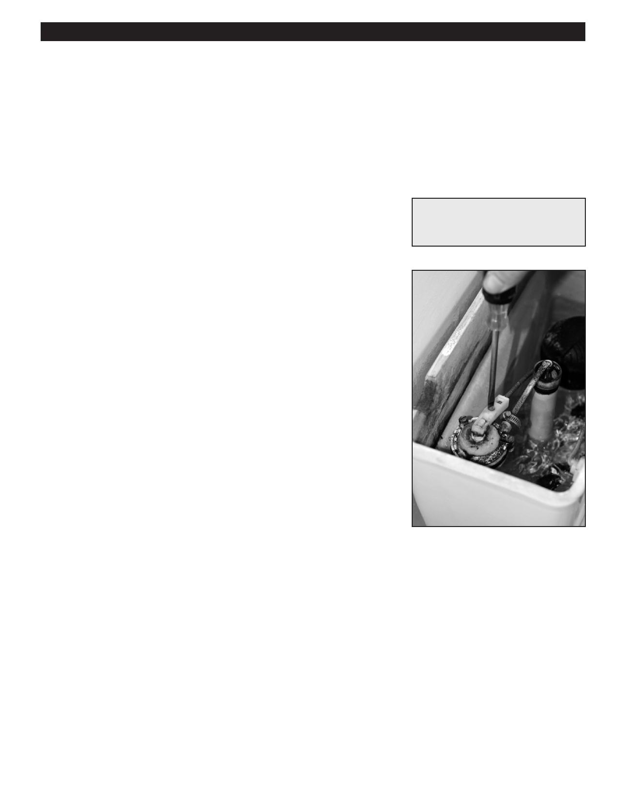

PA RT I C I PA N T R E S O U R C E G U I D E
Adjusting the Tank Water Level
The incorrect level of water in the toilet tank can be the cause of two woes: partial
flushing and “running.”
Fortunately, you can easily change the water level by adjusting a toilet part called a
fill valve or ballcock.
Safety
Tools and Materials Needed
Wear eye and hand protection.
Screwdriver
How-to Steps
Several fill valve (or ballcock) mechanisms are common in apartments. To adjust
the tank water level:
1. Remove the tank cover.
2. Identify the type of fill valve mechanism in the toilet, then adjust accordingly:
• Standard fill valve: Use adjustment screws to adjust the metal rod
connected to the float. Adjusting it up, raises the water level. Adjusting it
down, lowers the water level.
• Anti-siphon fill valve: Adjust the angle of metal float arm by turning the
adjustment screw clockwise (to raise the water level) or counterclockwise
(to lower the water level).
• Cartridge fill valve: Adjust the water level by raising or lowering the arm
connected to the cartridge. Squeeze the clip on the cartridge and slide the
arm down to lower the water level or up to raise the water level.
3. Flush and check operation. Adjust as needed.
Notes:
60